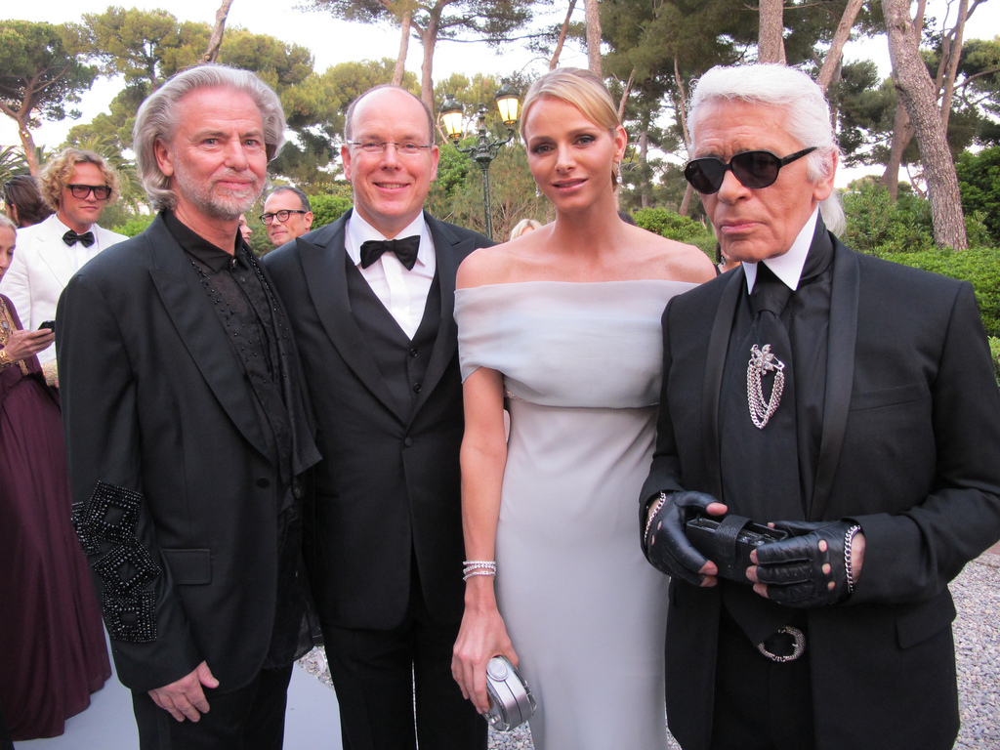

Karl Lagerfeld
A highly celebrated and recognised fashion icon

Lagerfeld with Hermann Buhlbecker, Prince Albert II and Charlene, princess of Monaco
A time line of Karl Lagerfeld's life:
- 1933 - Born in Hamburg to Elisabeth and Otto Lagerfeld, he was a creative director, fashion designer, artist, photographer and caricaturist who lived in Paris.
- Finished his secondary school at the Lycee Montaigne in Paris where he majored in drawing and history.
- 1955 - Worked with Balmain as an assistant after winning the international wool secretariat competition. Later an apprentice for 3years.
- 1958 - Became the artistic director for Jean Patou
- 1964 - Went to Rome to study art history and worked for Tiziano, later, designing freelance for Charles Jordan, Chloe, Valentino.
- 1962 - Hired by Fendi to monitize their fur line. He remained at Fendi until his death.
- 1980 - Hired by Chanel, where he helped revamped their RTW fashion line, integrated the "CC" monograph of Coco Chanel into a style pattern for the House of Chanel.
- 1984 - A year after his start at Chanel, Lagerfeld began his own eponymous "Karl Lagerfeld" brand. The brand was established to channel "intellectual sexiness".
- 2002 - Collaborate with Diesel founder Renzo Rozzo on a special denim collection which sold out over 90% on the first week of sales despite it's high end price.
- In a statement, Rozzo said
I am honoured to have met this fashion icon of our time.Karl represents creativity, tradition and challenge and the fact that he thought to collaborate with Diesel is a great gift and acknowledgement of our Pret-a-Porter of casual wear.
- 2010 - Received a fashion visionary award presented by the Couture Council of museum at fashion institute of technology.
- 2013 - Directed a short film Once upon a time... in the Cite du Cinema, Saint-Denis, by Luc Benson, featuring Keira Knightley in the role of Coco Chanel and Clotilde Hesme as her aunt Adrienne Channel.
- 2018 - Collaborated with carpenters workshop gallery, launched an art collection of functional sculptures titled Architectures.
- Lagerfeld was recognised for his signature white hair, black sunglasses, fingerless gloves and high starched detachable collars.
- He had an 18year relationship with French aristocrat, model and socialite Jacques de Bascher. Though Lagerfeld claimed the liaison never became sexual.
- Following his death, tabloids reported that he was to be cremated and his ashes mixed with those of De Bascher, which Lagerfeld kept in an Urn or with those of his mother.
- Owned a red point Birman called Choupette.
- Was a supporter of use of fur in fashion, this which caused a lot of controversy. In a BBC news in 2009, he claimed:
Hunters make a living having learnt nothing else than hunting, killing those beasts who would kill us if they could and maintained: In a meat-eating world, wearing leather for shoes and clothes and even handbags, the discussion of fur is childish.
- Following health complications in January 2019, Lagerfeld was admitted to the American hospital of Paris in Parisian suburb, Nueilly-sur-Seine on 18th February.
- Karl Lagerfeld died the following morning, 19th February from complications of pancreatic cancer.
The contents of this page is sourced from wikipedia. To learn more about this iconic man, check KARL LAGERFELD.